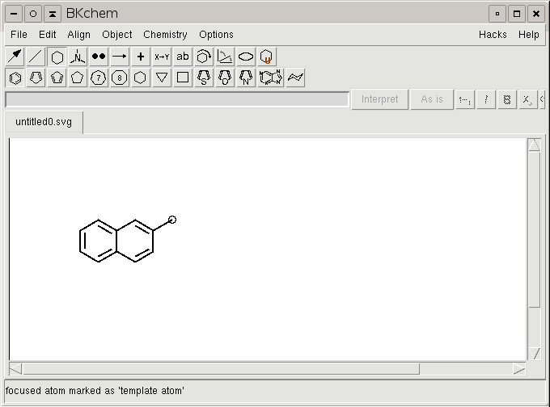

Even if the possibility to create custom templates in BKchem exists from the version 0.1.0, there was no possibility how to actually use them and therefore it was not documented. Starting from BKchem version 0.9.0-pre1 a special mode for custom templates was added and here is the documentation how to use it.
Creating a new template is straightforward and easy, however not so easy as you might think :). Even if it would be possible for the program to guess how to attach the template to another molecule when you use it, I did not implement anything like this, because explicit is usually better than implicit. Therefore you have to tell BKchem which position you would like to use for attaching a template to a new molecule and which bond should be used when you click on a bond in an exiting molecule.
I will demostrate the process on creating a template of naphtalene-2-yl. To do so, you have to draw naphtalene and then add a substituent (usualy methyl but it does not matter as this atom is ignored) to the position you would like this template to connect with. In this case to the position 2.
Now we have to tell BKchem which atom is the template atom - the atom that marks the position of molecule concatenation. To do it, you have to change the mode to template mode (click on the cyclohexane icon in the upper button menu), focus the atom you want to mark (put the cursor above it so that a circle appears around it) and hit the keys C-t (press t while holding the Control key). In the status bar a message "focused atom was marked template atom" should appear.
NOTE: The template atom is deleted when you use the template, it serves only as a marker to precisely specify the direction and distance in which to place the template.
Now we have specify the bond that will be used when you want to add the template to a bond and not an atom (as for instance when you create the naphtalene molecule from 2 benzene molecules). The procedure is the same as for atom, however in this case the bond really exists in the molecule and is not deleted when the template is used. You have to focus the bond in template mode and hit C-t. You will get a message informing you that the focused bond was marked as template bond.
Now, as the access points of the template are defined, only one thing remains to be done and this is to name your template. You can do it by selecting the molecule or any part of it and using the Menu/Object/Set molecule name command. Under this name you will be able to access the prepared template.
The only thing that remains now, is to store the newly created template in a directory where BKchem can find it. This directory is site-dependent - on Unix systems its ~/.bkchem/templates/ on Windows .bkchem/templates in the directory where BKchem is installed. You can do it either by hand, or use the command Save As Template in the File menu, which will also check the content of the file and warn you when there is some problem with your template(s).
Now, when everything went OK, you can restart BKchem and you should see your newly created templates in the menu of the Custom templates mode.
I welcome any suggestions and bug reports related to this text, the procedures described here or BKchem in general on my email address.